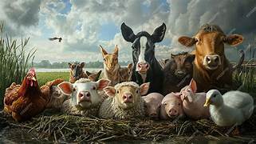
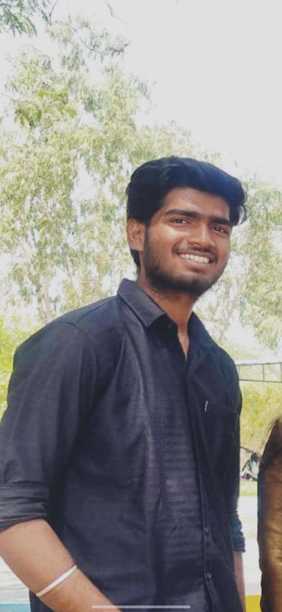
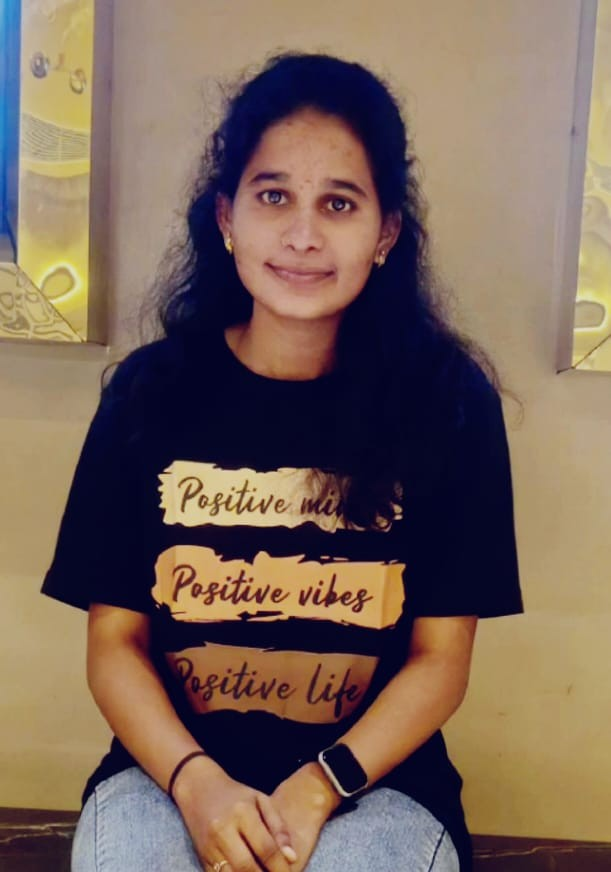
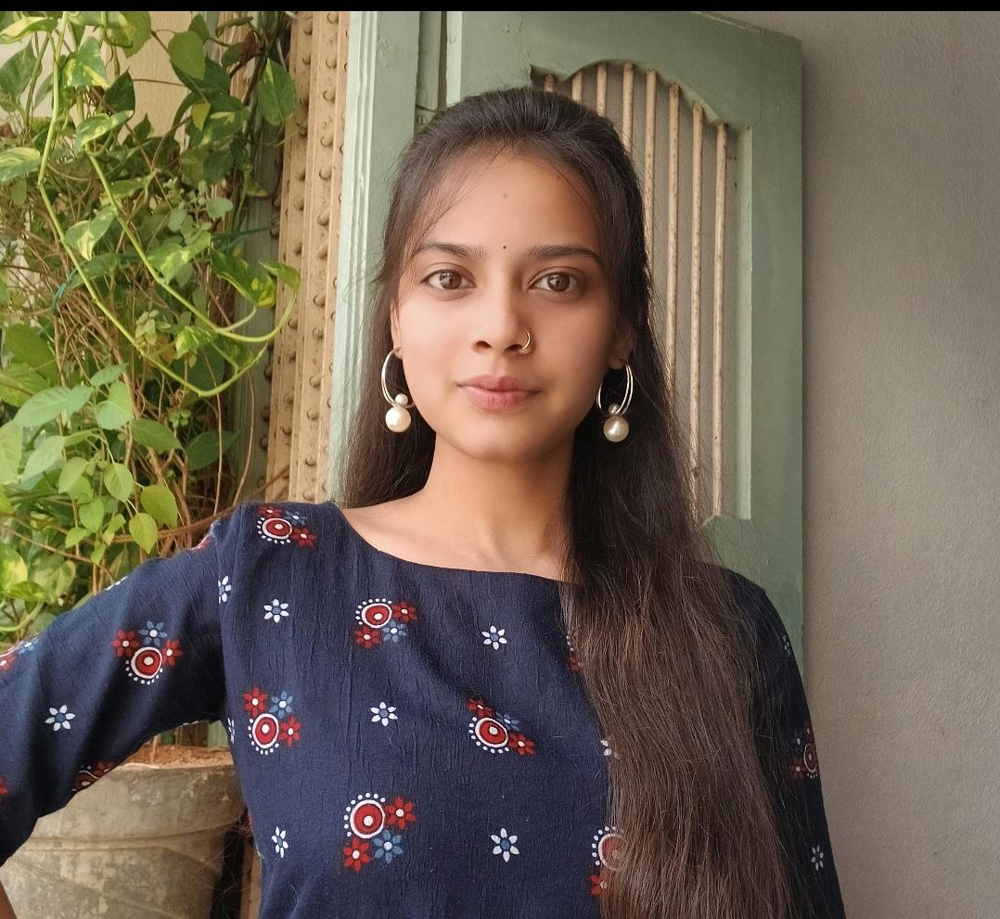
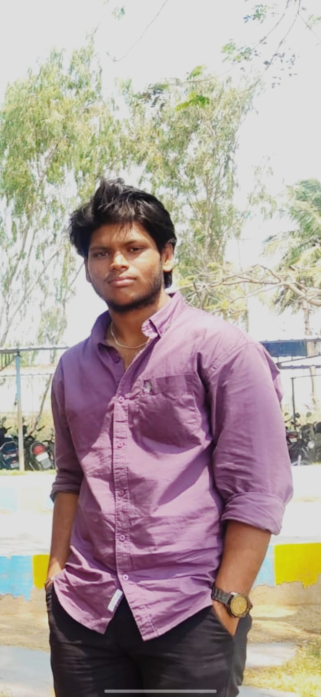
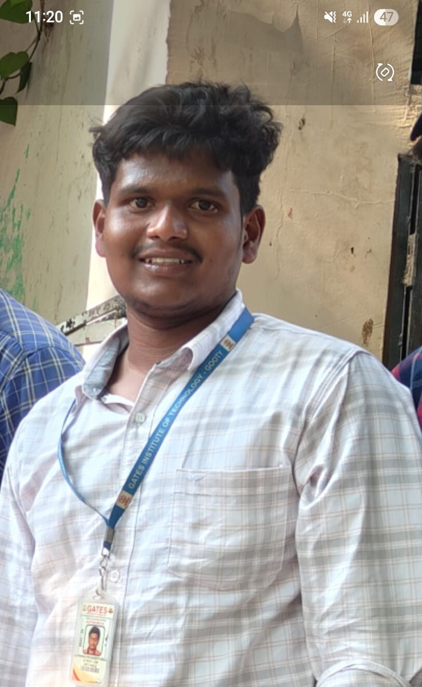

Pawsitive Impact is a community-driven animal welfare platform created to rescue, protect, and provide a better life for stray animals. We connect caring people with animals that need food, medical support, safe shelter, and loving homes.

Helping injured and abandoned animals through quick reporting and support.
Connecting rescued animals with responsible families.
Providing food, medical care and a safe environment.
The people behind Pawsitive Impact working together for animal welfare.

Leads the overall project activities, coordinates rescue operations,
manages field visits and ensures that animals receive proper care,
support and timely assistance.

Creates awareness about stray animal welfare,
promotes responsible
pet care, adoption and encourages
people to participate in helping animals.

Maintains rescue records, prepares project documentation,
creates informative content and shares animal welfare updates
with the community.

Connects with local communities, volunteers and animal lovers
to spread information about rescue activities and
build support
for animal welfare initiatives.

Manages resources, coordinates rescue supplies,
conducts surveys
to identify animals needing help and
supports smooth field operations.